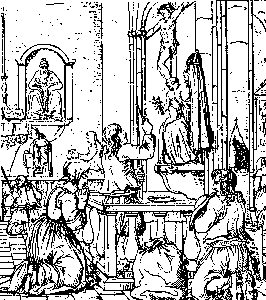

1. Anv Tad, ar Mab hag ar Spered Glan!
Yec'hed mad d'eoc'h, tud an ti-mañ,
Yec'hed mad d'eoc'h war bouez hor penn,
Deuet omp d'ho lakaad er bedenn.
2. Pa sko ar Maro war an nor,
Stok er c'halonoù ar c'hrenn-mor,
Da doull an nor pa zeu 'r Maro,
Piv gant ar maro a yelo?
3. Hogen, na vezit ket souezhet,
Da doull ho tor mar d'eomp degouezhet:
Jezuz e-neus on degaset
D'ho tihunañ mar d'eoc'h-c'hwi kousket;
4. D'ho tihunañ, tud an ti-mañ,
D'ho tihunañ, bras ha bihan:
Mar 'z eus, siwazh, truez er bed,
En an' Doue ! hor sikourit !
5. Breudeur, kerent ha mignoned,
En an' Doue, hor selaouit!
En an' Doue, pedit, pedit,
Rag ar vugale na reont ket!
6. Gant ar re hon-eus-ni maget,
Emaomp pell-zo ankounac'haet.
Gant ar re hon-eus-ni karet,
Hep truez emaomp dilezet.
7. Va mab, va merc'h, c'hwi zo kousket
War ar pluñv dous ha blot-meurbet,
Ha me ho tad, ha me ho mamm,
Er purkator e-kreiz ar flamm.
8. C'hwi zo er gwele kousket aez.
An Anaon paour zo diaez,
C'hwi zo er gwele kousket mat.
An anaon paour zo divat.
|
9. Ul liñser wenn ha pemp plankenn,
Un dorchenn blouz dindan ho penn,
Pemp troatad douar war c'horre,
Setu madoù ar bed er bez!

10. Ni zo en tan hag en anken:
Tan dindanomp, tan war hor penn,
Ha tan war laez, ha tan d'an traoñ!
Pedit evit an anaon!
11. Gwechall pa oam e-barzh ar bed,
Hon-oa kerent ha mignoned.
Hogen bremañ, paz omp marvet
Kerent, mignoned, n'hon-eus ket.
12. En an' Doue, hor sikourit!
Pedit ar Werc'hez benniget
Da skuilhañ ul lomm eus he laezh,
Ul lomm war an anaon kaezh!
13. Eus ho kwele prim dilammit!
War ho taoulin en em strinkit!
Nemet koue'et e vefec'h er c'hleñved,
Pe gant ar marv kent galvet.
|